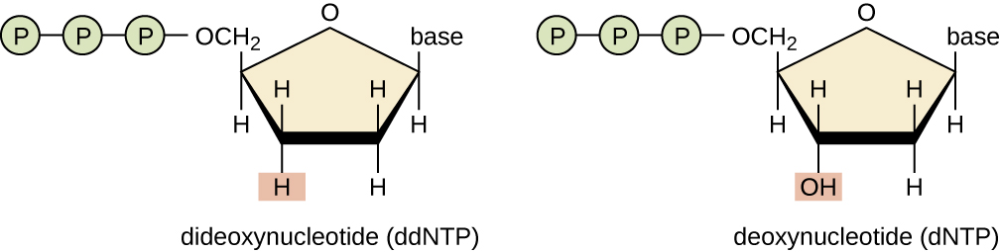
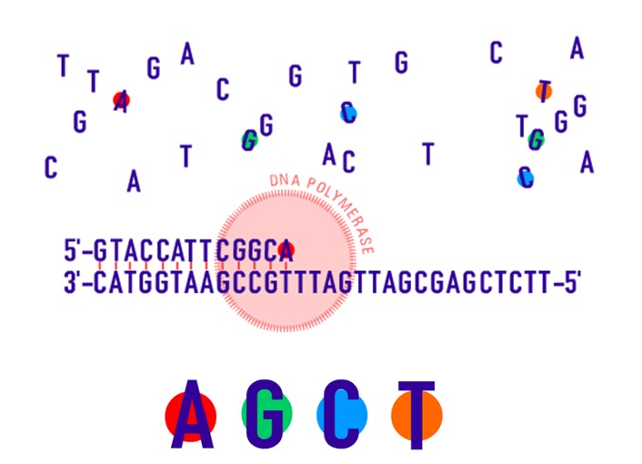
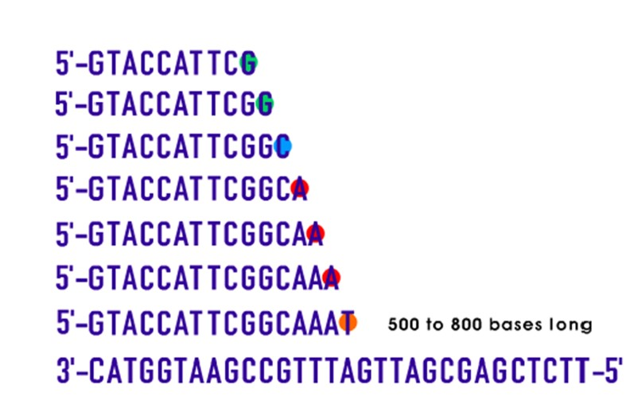
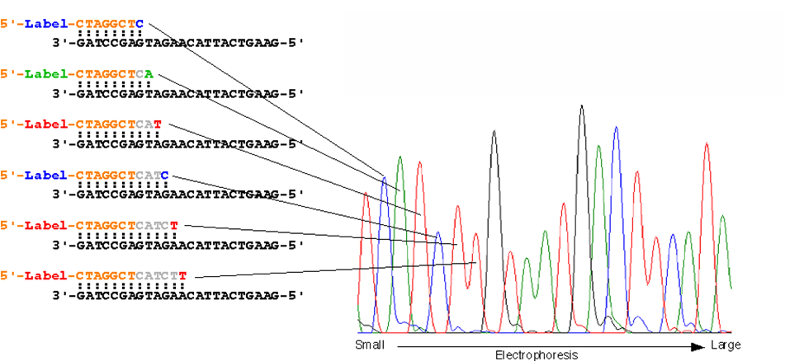

9 Sequenciamento
Depois de realizada a purificação, o fragmento purificado pode ser sequenciado. O sequenciamento de DNA consiste no processo de determinação da sequência de nucleotídeos (A, T, G e C) em um fragmento de DNA. A informação contida nessas sequências de nucleotídeos possibilita diversos tipos de aplicações, como, por exemplo, identificar o organismo ao qual pertence uma amostra, diagnosticar uma doença genética, aplicar em estudos de filogenia e diversidade genética, entre outros.
Existem vários métodos para o sequenciamento do DNA, tais como:
O método enzimático (1ª Geração) de Frederik Sanger (1980);
O método de pirosequenciamento (2ª Geração) de Mostafa Ronaghi (1996);
O de 3ª Geração, Single Molecule Real Time (SMRT) - DNA Sequencing;
Métodos mais modernos conhecidos como Sequenciamento de Nova Geração (NGS).
A técnica desenvolvida por Sanger e colaboradores possibilitou a determinação da sequência nucleotídica e se tornou mais acessível devido aos avanços recentes na fabricação de equipamentos automatizados. Além disso, é um dos métodos mais utilizados (inclusive nos trabalhos do Nupgen) e consiste na adição de um reagente único: os didesoxirribonucleotídeos trifosfatados (ddNTPs). É realizada uma reação de sequenciamento, contendo os mesmos reagentes utilizados na Reação em Cadeia da Polimerase, com a presença dos ddNTPS, ou seja, terminadores de cadeia para os quatro nucleotídeos (ddATP, ddTTP, ddCTP, ddGTP), cada um deles marcado com um corante fluorescente de cores diferentes.

A variação no tamanho dos fragmentos acontece por essa adição de nucleotídeos modificados (ddNTPs) juntamente com nucleotídeos normais (dNTPs). Os ddNTPS não possuem o radical hidroxila (OH) no carbono 3’ da ribose, então ao serem incorporados na fita que está sendo sintetizada, haverá a interrupção dessa síntese. É uma adição aleatória e produzirá fragmentos terminados em cada uma das posições dos nucleotídeos da sequência de DNA que se deseja analisar. Dessa maneira, o método de Sanger consiste na produção de fragmentos de DNA com tamanhos que diferem em um nucleotídeo, utilizando como molde uma fita simples de DNA.


Os equipamentos automatizados utilizados hoje em dia para o sequenciamento possuem capilares extremamente finos que por meio da migração por eletroforese capilar, irão alinhar os fragmentos com base em seu tamanho (do menor para o maior), detectando por um feixe de laser a marcação de cada um dos quatro ddNTPs com a molécula fluorescente. Isso permite identificar qual foi o nucleotídeo adicionado em cada posição terminal dos fragmentos, construindo a sequência da molécula de DNA alvo dos estudos. Essa técnica é geralmente utilizada para o sequenciamento de moléculas com aproximadamente 100 e 1000 pb. Como resultado do sequenciamento, são obtidos os eletroferogramas, que apresentam picos representando cada um dos nucleotídeos e consequentemente a sequência do fragmento de interesse.

Atualmente, o Nupgen envia as amostras para o sequenciamento para a empresa ACTGene Análises Moleculares LTDA que utilizada o sequenciador automatizado Applied Biosystems® AB 3500 Genetic Analyzer (sequenciamento de Sanger). Essa empresa é do Rio Grande do Sul, então as amostras são preparadas e devidamente acondicionadas para serem enviadas pelos correios.
Site da ACTGene: https://actgene.com.br/
Informações sobre envio/preparo das amostras: https://actgene.com.br/wp-content/uploads/2022/06/ACTGene_Guia-preparo-de-amostras.pdf